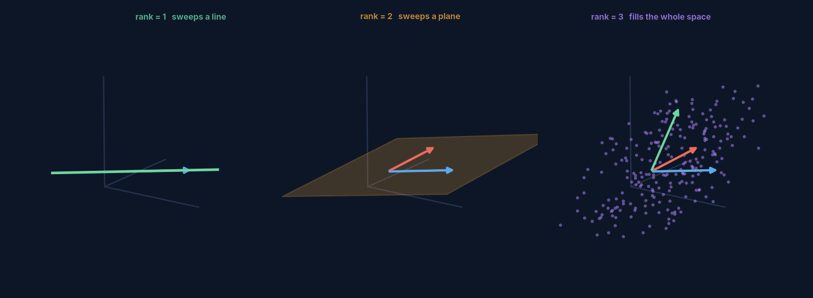
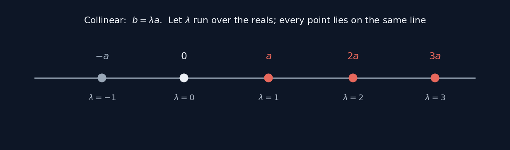
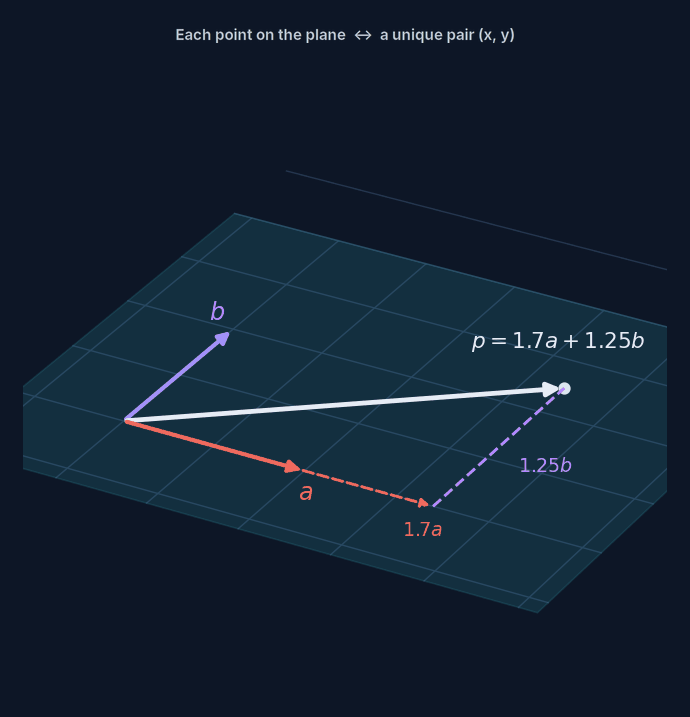
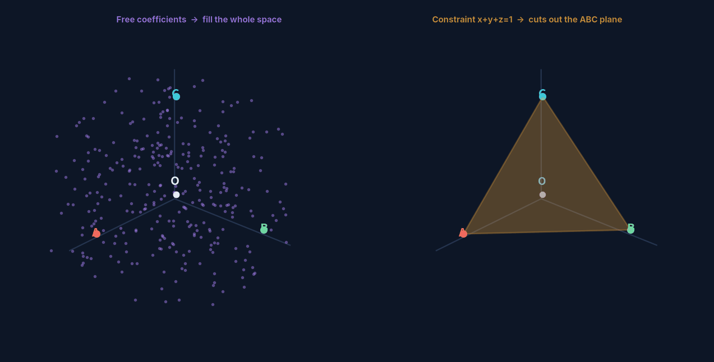
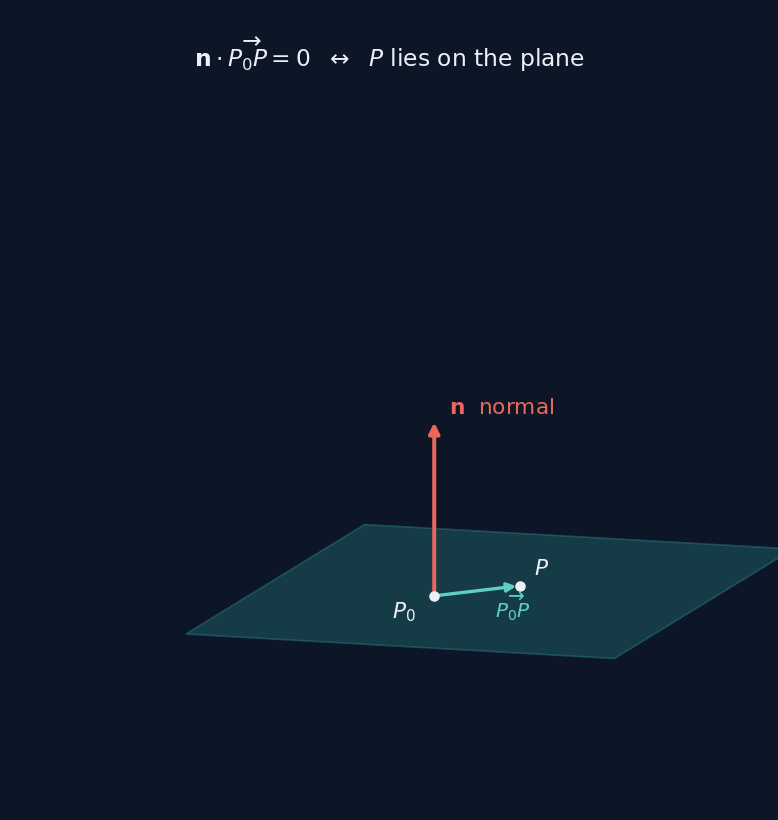
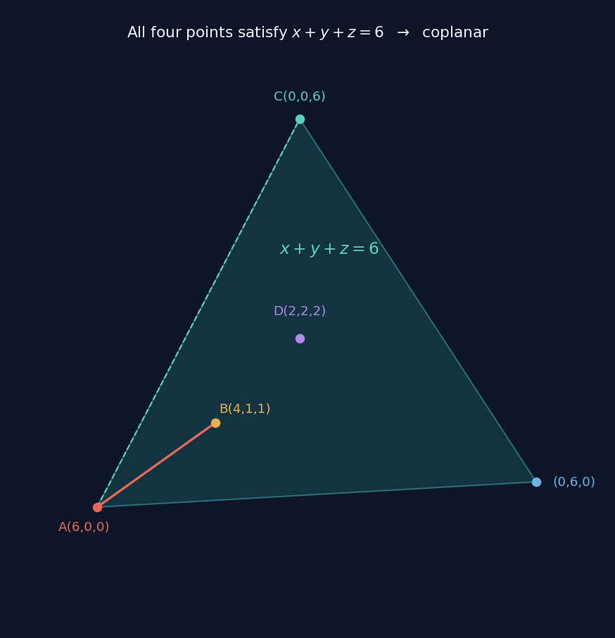
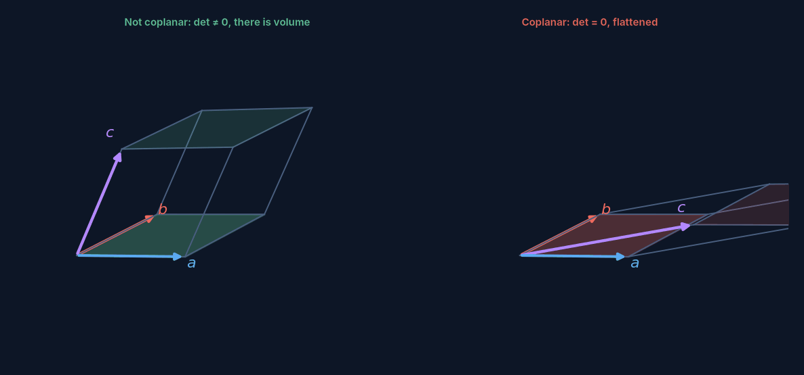
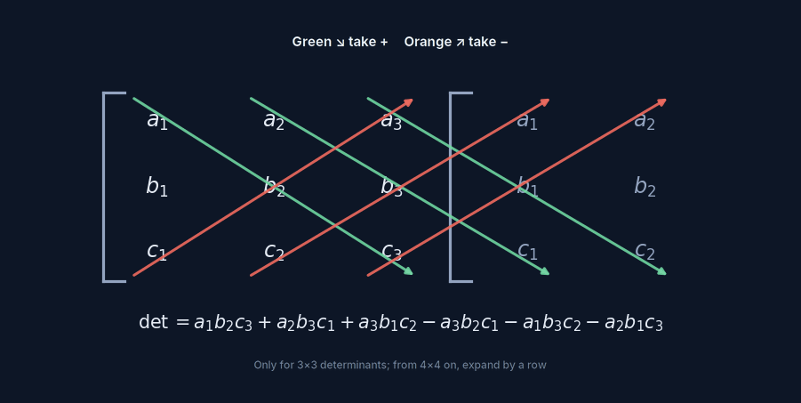

From "are these four points coplanar" to linear algebra
One high-school question, walked all the way to rank, span, and determinants
Running example: are $A(6,0,0)$, $B(4,1,1)$, $C(0,0,6)$, $D(2,2,2)$ coplanar?
Vectors & Space covered the dot product, cross product, and determinants. Matrices & Transformations covered rank and the four subspaces.
The step in between — what "coplanar" from school actually corresponds to at university — is what this page fills in.
First, is this even linear algebra?
Yes — and it's the most central part of it. The "vectors" you learn in high school are, almost exactly, linear algebra specialised to $n=3$. The textbook uses geometric language to keep things intuitive; university swaps in a more abstract vocabulary for the same ideas.
| What school calls it | What linear algebra calls it | The essence |
|---|---|---|
| $\vec b=\lambda\vec a$, two vectors are collinear | $\vec a,\vec b$ are linearly dependent | rank 1 |
| $\vec p=x\vec a+y\vec b$, three vectors are coplanar | $\vec p$ lies in the subspace spanned by $\vec a,\vec b$ | rank 2 |
| the space vector basis theorem | $\{\vec a,\vec b,\vec c\}$ forms a basis for $\mathbb R^3$ | rank 3 |
| $x\vec a+y\vec b+z\vec c$ | linear combination | — |
| testing coplanarity (guessing coefficients) | checking whether the determinant is zero, or finding the rank | same test |
| dot product $\vec a\cdot\vec b$ | inner product, written $\mathbf a^{\mathsf T}\mathbf b$ | — |
| normal vector $\vec n$ | the plane's orthogonal complement | — |
Linear algebra isn't new knowledge. It's the same things you already know, translated into a language that generalises to $n$ dimensions.
So in university language, this problem is just: check whether the rank of three vectors is less than 3. School doesn't teach "rank" or "determinant," so it's stuck guessing coefficients by hand — which is exactly why the same question feels roundabout in school and takes one line at university.
Starting point: what can a linear combination sweep out
Given a few vectors, scale each by a number and add them up — that's a linear combination:
The coefficients can be any real numbers. Linear algebra, at bottom, studies exactly one thing: fix a handful of vectors, let the coefficients range over every real number — what shape do you sweep out?

What gets swept out is called the span, and its dimension is the rank of that set of vectors. Three geometric ideas turn out to be one:
rank = 1 → sweeps out a line → the vectors are collinear
rank = 2 → sweeps out a plane → the vectors are coplanar
rank = 3 → sweeps out all of space → not coplanar, they form a basis
Coplanarity is a rank question. That's the first key sentence on this page.


Where "coefficients sum to 1" comes from
Testing four points for coplanarity, textbooks often require $x+y+z=1$. Where does that condition come from?

The difference is whether it passes through the origin
With free coefficients, $x\vec a+y\vec b+z\vec c$ sweeps out an entire subspace through the origin. But asking whether four points are coplanar is asking "is D on the plane determined by A, B and C" — and that plane generally does not pass through the origin.
Add $x+y+z=1$ and the combination turns from a linear combination into an affine combination: it no longer sweeps out a subspace through the origin, but exactly the plane through those three points. That "1" is the ticket that shifts the subspace into position.
This is the same structure as "general solution = particular solution + homogeneous solution" from the fitting page: the homogeneous part slides around inside the plane, the particular solution moves the whole plane to where it belongs.
A different route: coordinates and a normal vector
Instead of guessing coefficients, you can write down the plane's equation directly.

A normal vector is perpendicular to every vector in the plane, and two nonzero vectors are perpendicular exactly when their dot product is zero. Expand it and you get the general form:
While we're here: why its solutions have to form a plane
Three-dimensional space has 3 degrees of freedom; one linear constraint removes 1, leaving 2 — geometrically, exactly a two-dimensional surface. And because the equation is degree one with no curved terms, that surface has no bend in it. So it's a plane, not some curved shape.

A third route: the determinant
The quickest method turns "coplanar" straight into a single calculation.


The absolute value of a determinant is "volume" in the relevant dimension: order two is
area, order three is volume, order four is a four-dimensional hypervolume. Higher orders
can't use the diagonal rule; you expand by row instead — a $4\times4$ splits into four
$3\times3$'s, which split again into $2\times2$'s.
Worked through in → Vectors & Space
Three methods, one problem
| Method | What you do | Who it suits |
|---|---|---|
| Inspection | guess coefficients: find $x,y$ so that $\overrightarrow{AD}=x\overrightarrow{AB}+y\overrightarrow{AC}$ | high school, fastest, but relies on a good eye |
| Coordinates | find the plane's equation, then substitute the fourth point to check | reliable, every step explicit, no guessing involved |
| Determinant | arrange the three vectors into a matrix, check whether $\det$ is zero | the standard university method, one line to an answer |
These three methods aren't three separate things — they're three ways of writing the same test. Coefficients exist $\iff$ the point lies in the span $\iff$ rank is less than 3 $\iff$ the determinant is zero. High school reaches for the first one because the toolkit is limited, not because it's somehow more fundamental.
Vocabulary, quick reference
| Term | In one line | In this problem |
|---|---|---|
| linear combination | scale each vector and add | $x\overrightarrow{AB}+y\overrightarrow{AC}$ |
| span | the shape swept out by every possible combination | the plane determined by $A,B,C$ |
| rank | the dimension of the span | 2 in this problem, hence coplanar |
| linearly dependent | one vector is redundant | $\overrightarrow{AD}$ can be written using the other two |
| basis | a set of vectors that spans exactly, with none spare | these three vectors don't form one here |
| affine combination | a linear combination whose coefficients sum to 1 | shifts a subspace off the origin |
| orthogonal complement | every direction perpendicular to a subspace | the plane's normal vector $\vec n$ |
One step further
By the end of this one problem you've already used every core word from the matrices page: span, rank, linear dependence, basis. The next step is only extending them from "three vectors" to "however many vectors, in however many dimensions" — same names, same picture, just $3$ swapped for $n$.
Full notes
What's on the page is the spine. The full version runs to about 18,000 characters with step-by-step derivations, worked examples across all three methods, and practice questions with answers, all eight figures embedded — Markdown, opens or prints in any editor.
Friendship code, please
请输入友情码
Hint: who said the line on the front page? His surname will do.
线索：首页那句话是谁说的？填他的姓。
Not quite — try again